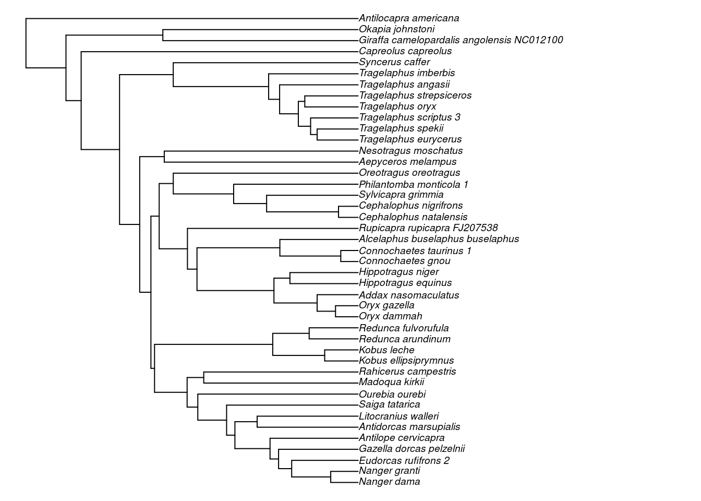
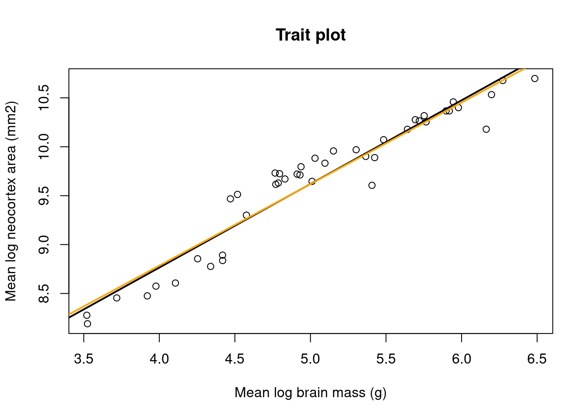
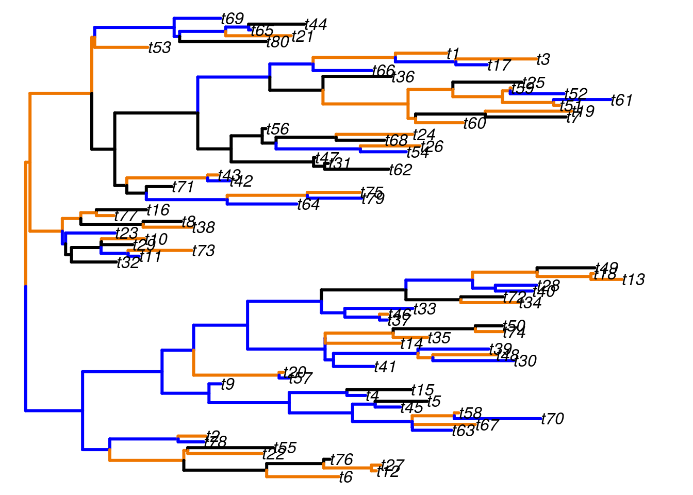
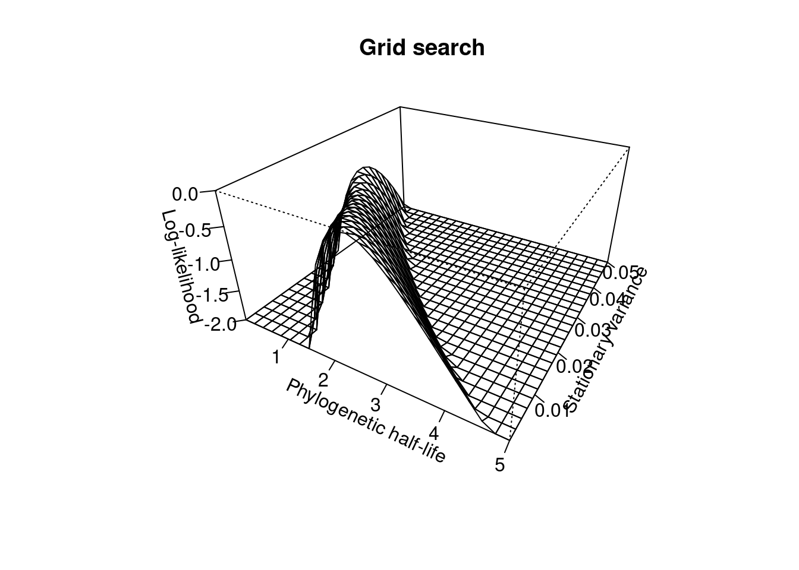
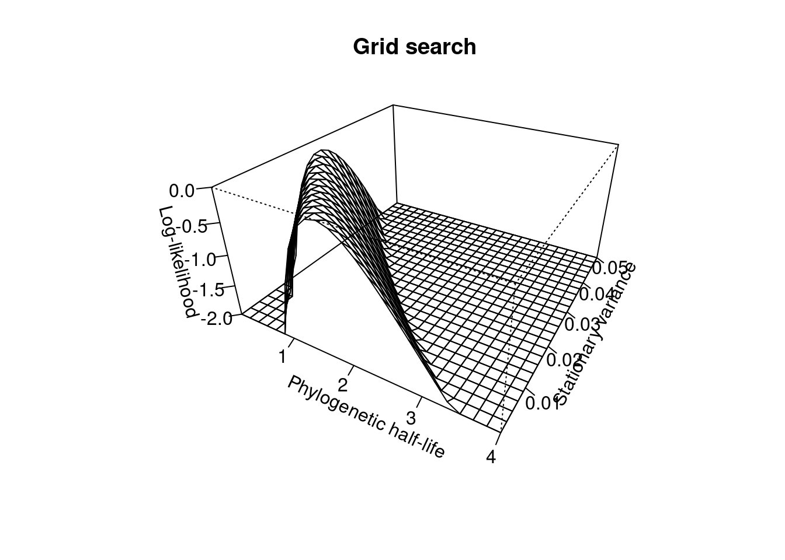

vignettes/introduction.Rmd
introduction.RmdSLOUCH is an implementation of a particular phylogenetic comparative method. It can fit univariate among-species Ornstein-Uhlenbeck models of phenotypic trait evolution, where the trait evolves towards a primary optimum. Optima can be fitted either as discrete regimes as niches on the phylogenetic tree, and/or with continuous covariates. This document is not meant to be exhaustive nor cover the biological interpretations in any depth; it is merely a short introduction on software syntax and a few technical issues. For more information about the theoretical background, how the method is derived, and how to interpret the models, see the associated literature:
In order to fit Ornstein-Uhlenbeck models in SLOUCH, we will need to have a rooted phylogenetic tree of interest in the phylo format, from package ape. Polytomies and non-branching edges are allowed. Both ultrametric and non-ultrametric trees can be used, but this will have implications for reliable estimation of certain parameters. For the purposes of illustrating syntax, we will use a dataset of artiodactyl neocortices bundled with the package (see ?neocortex), and a corresponding phylogenetic tree (Toljagić et al. 2017). First, we will organize the neocortex data and associated annotation data.
# Load necessary packages
library(ape)
library(slouch)
## Load the phylogenetic tree with annotation data
data(artiodactyla)
phy <- artiodactyla
## Load the neocortex dataset
data(neocortex)
## Plot the tree
par(mar = rep(0, 4))
plot(ladderize(phy), cex = 0.6)
par(mar = c(5.1, 4.1, 4.1, 2.1))Now, we have a phylogenetic tree with corresponding morphological data for all of the extant species. If you use your own data to fit models, it is recommended to store the data for the terminal branches in a data frame or in a similar data structure. In order to line up the data frame with the tree, SLOUCH requires the species in the data frame need to be in a particular order.
## Check whether they are lined up correctly
neocortex$species == phy$tip.label## [1] FALSE FALSE FALSE FALSE FALSE TRUE FALSE FALSE FALSE TRUE TRUE
## [12] TRUE TRUE FALSE FALSE FALSE FALSE FALSE FALSE FALSE FALSE FALSE
## [23] FALSE FALSE FALSE FALSE FALSE FALSE FALSE FALSE FALSE FALSE FALSE
## [34] FALSE FALSE FALSE FALSE FALSE FALSE FALSE FALSE FALSE FALSEUnsurprisingly, not all of the species are in their correct places; we will have to reorder the data framv. Here is one way to do it.
neocortex <- neocortex[match(phy$tip.label, neocortex$species), ]
## Check if they line up again
neocortex$species == phy$tip.label## [1] TRUE TRUE TRUE TRUE TRUE TRUE TRUE TRUE TRUE TRUE TRUE TRUE TRUE TRUE
## [15] TRUE TRUE TRUE TRUE TRUE TRUE TRUE TRUE TRUE TRUE TRUE TRUE TRUE TRUE
## [29] TRUE TRUE TRUE TRUE TRUE TRUE TRUE TRUE TRUE TRUE TRUE TRUE TRUE TRUE
## [43] TRUENow we are ready to fit the first models, for which we will use the function slouch.fit. The following is an intercept-only model, or a single-optimum model. In slouch, there are two main techniques for estimating the most likely \(\alpha\) and \(\sigma_y^2\) parameters. In this particular implementation the \(\sigma_y^2\) is reparameterized as \(\sigma_y^2/2\alpha\), which is the variance of the residuals of the response variable when it is stationary around the optimum. The \(\alpha\) is reparameterized as \(t_{1/2} = \log(2)/\alpha\), which is the phylogenetic half-life. The first way is to use a grid-search of likely parameters from user input, which may take some trial and error.
model0 <- slouch.fit(phy = phy,
hl_values = seq(0.001, 12, length.out = 10),
vy_values = seq(0.1, 1, length.out = 10),
species = neocortex$species,
response = neocortex$neocortex_area_mm2_log_mean)
model1 <- slouch.fit(phy = phy,
hl_values = seq(0.001, 150, length.out = 25),
vy_values = seq(0.1, 2.5, length.out = 25),
species = neocortex$species,
response = neocortex$neocortex_area_mm2_log_mean)
plot(model0)
plot(model1)Log likelihood surface for the OU model
These plots of the likelihood surfaces are both based on the same data, but with different grid location and resolution. The optima and model fit statistics that are reported in the output are conditional on the combination of these \(t_{1/2}\) and \(\sigma_y^2/2\alpha\) that give the highest log-likelihood; in this case the peak of the surface in the likelihood plot. If the grid-search does not contain the true maximum likelihood, the model outputs will reflect this. It is also possible to use other packages to plot the grid-search likelihood surface, for a more aesthetic look (not run).
library(plotly)
p <- plot_ly(x = model0$supportplot$hl,
y = model0$supportplot$vy,
z = model0$supportplot$z) %>%
add_surface() %>%
layout(title = "Grid-search",
scene = list(xaxis = list(title = "Phylogenetic half-life"),
yaxis = list(title = "Stationary variance"),
zaxis = list(title = "Log-likelihood")))
pAnother, perhaps more convenient way of estimating parameters is to use the hillclimber function. On default it will start on a random combination of \(t_{1/2}\) and \(\sigma_y^2/2\alpha\), but this may also be specified. While the hillclimber might seem both faster and more accurate at first glance, there are some drawbacks. If the likelihood search space has one or more local maxima, the hillclimber may converge at a sub-optimal location and give parameter estimates that are not truly maximum-likelihood estimates. Additionally, even though the hillclimber may converge at some local or global maximum, it will not indicate whether the support region of the parameters is narrow or wide. One problem when using the hillclimber is that, depending on the specified model, the residual variance-covariance matrix \(\mathbf{V}\) may collapse if \(\sigma_y^2/2\alpha\) reaches zero. The immediate consequence is that matrix is non-invertible, and the program will crash. If within-species observational error is non-zero and added to the model, this does not happen. In order to use the hillclimber in this scenario, it may be necessary to constrain its search space such that \(\sigma_y^2/2\alpha\) does not enter zero or close to zero. The exact feasible boundary for this may depend on the scale of the response trait.
model2 <- slouch.fit(phy = phy,
species = neocortex$species,
response = neocortex$neocortex_area_mm2_log_mean,
hillclimb = TRUE,
lower = c(0.001, 0.01))
plot(model2)The maximum-likelihood estimate of the phylogenetic half-life (\(t_{1/2} = \log(2)/\alpha\)) was very large for this model, and the rate of adaptation (\(\alpha\)) was practically zero. The units of the phylogenetic half-lives are the same units as the branch lengths in the phylogenetic tree, phy$edge.length. The total depth, or distance from the root, can for all nodes be calculated with node.depth.edgelength(phy). For this phylogenetic tree the maximum depth is about 27 million years. Given that the estimated half-life \(t_{1/2}\) was many times larger than the total length of the phylogeny, and that \(\alpha\) is very close to zero, we can conclude that there is next to no strength of attraction towards the optimum. If there is no such pull, the model collapses to a Brownian motion.
SLOUCH can also fit the optimum as a linear regression with one or more continuous covariates. The covariates may either be fitted as direct effects without a phylogenetic covariance structure, or as univariate Brownian-motion variables. We will first fit log brain mass as a direct effect covariate.
model3 <- slouch.fit(phy = phy,
species = neocortex$species,
response = neocortex$neocortex_area_mm2_log_mean,
direct.cov = neocortex$brain_mass_g_log_mean,
lower = c(0.001, 0.01),
hillclimb = TRUE)
plot(model3)
plot(x = neocortex$brain_mass_g_log_mean,
y = neocortex$neocortex_area_mm2_log_mean,
xlab = "Mean log brain mass (g)",
ylab = "Mean log neocortex area (mm2)",
main = "Trait plot")
abline(lm(neocortex_area_mm2_log_mean ~ brain_mass_g_log_mean,
data = neocortex),
col = "black", lwd = 2)
abline(model3$opt.reg$coefficients[,1],
col = "orange", lwd = 2)
model3$opt.reg$coefficients## Estimates Std. error
## (Intercept) 5.4488683 0.23769229
## neocortex$brain_mass_g_log_mean 0.8339189 0.04414703
While the single-optimum model showed a very strong phylogenetic inertia, in this model it is somewhat lower with a phylogenetic half-life (\(t_{1/2}\)) of 16.9 myr. In this case, the regression line estimated using ordinary least squares is almost indistinguishable from the Ornstein-Uhlenbeck optimal regression. It is also possible to fit a model with multiple continuous covariates, however the input to direct.cov must be a matrix or data frame that has column names.
model4 <-
slouch.fit(phy = phy,
species = neocortex$species,
response = neocortex$neocortex_area_mm2_log_mean,
direct.cov = cbind(brain = neocortex$brain_mass_g_log_mean,
body = neocortex$body_mass_g_log_mean),
lower = c(0.001, 0.01),
hillclimb = TRUE)
plot(model4)SLOUCH can fit models with multiple adaptive regimes or niches over the branches of the phylogenetic tree. We will fit neocortex size as a function of diet in artiodactyls. Trees in the phylo format are represented by the edges found in phy$edge, where each edge connects two vertices or nodes. All of the tip nodes have indices starting from 1, 2, 3 … until \(n_{tips}\), in this case 43. The root node has index \(n_{tips}\)+1, here 44, and the rest of the internal nodes have indices (\(n_{tips}\)+2, \(n_{tips}\)+3, …, \(n_{nodes}\)). When running this type of model, we will need to specify the internal adaptive regimes in the order of node indices (\(n_{tips}\)+1, \(n_{tips}\)+2, \(n_{tips}\)+3, …, \(n_{nodes}\)). In order to plot and visually verify that the ancestral state configuration is sensible, we need to have all the regimes in the order of the edges, not the nodes.
## Inspect the internal node regimes
## These have order n+1, n+2, n+3 ...
internal_regimes <- factor(phy$node.label)
## Concatenate tip and internal regimes. These will have order 1,2,3 ...
regimes <- c(neocortex$diet, internal_regimes)
## Pick out the regimes of the edges, in the order of phy$edge
edge_regimes <- factor(regimes[phy$edge[,2]])
par(mar = rep(0, 4))
plot(phy,
edge.color = c("Black", "Orange", "blue")[edge_regimes],
edge.width = 3, cex = 0.6)
par(mar = c(5.1, 4.1, 4.1, 2.1))If it looks like there are no visible mistakes, we can go ahead and fit the model in SLOUCH.
model5 <- slouch.fit(phy = phy,
species = neocortex$species,
response = neocortex$neocortex_area_mm2_log_mean,
direct.cov = neocortex$brain_mass_g_log_mean,
fixed.fact = neocortex$diet,
hillclimb = TRUE,
lower = c(0.001, 0.01))
model5$opt.reg$coefficients## Estimates Std. error
## Br 5.3746627 0.22276529
## Gr 5.6045139 0.30280262
## MF 5.5558924 0.22390082
## neocortex$brain_mass_g_log_mean 0.8203544 0.04314232SLOUCH can also fit models with continuous covariates that themselves have a phylogenetic covariance structure. Currently the only option is to model them as univariate Brownian motions. If \(\alpha > 0\), the optimal regression and the evolutionary regression will differ. Here, both the grid-search and the hillclimber routine are used to find the maximum-likelihood estimates for \(t_{1/2}\) and \(\sigma_y^2/2\alpha\).
model6 <- slouch.fit(phy = phy,
hl_values = seq(0.001, 5, length.out = 25),
vy_values = seq(0.001, 0.05, length.out = 25),
species = neocortex$species,
response = neocortex$neocortex_area_mm2_log_mean,
random.cov = neocortex$brain_mass_g_log_mean,
hillclimb = TRUE,
lower = c(0.001, 0.0005))
model6$opt.reg$coefficients## Estimates Std. error
## (Intercept) 5.3406859 0.21881752
## neocortex$brain_mass_g_log_mean (bm) 0.9864637 0.04678965plot(model6)
Slouch can incorporate estimates of observational error by specifying the within-species estimation variances. For example, if \(X\) is the mean log brain mass for each species, the statistic for the measurement error argument would be the variance of the mean log brain mass for each species.
model7 <- slouch.fit(phy = phy,
hl_values = seq(0.001, 4, length.out = 25),
vy_values = seq(0.001, 0.05, length.out = 25),
species = neocortex$species,
response = neocortex$neocortex_area_mm2_log_mean,
mv.response = neocortex$neocortex_se_squared,
random.cov = neocortex$brain_mass_g_log_mean,
mv.random.cov = neocortex$brain_se_squared,
hillclimb = TRUE,
lower = c(0.001, 0.001))
plot(model7)
If the observational errors are non-zero, the generalized least squares estimator may be biased. A bias correction for the regression coefficients is implemented according to Hansen & Bartoszek (2012), but the parameter search and the reported model-fit statistics are conditional on the naive optimal regression.
Hansen, T. F. (1997). Stabilizing Selection and the Comparative Analysis of Adaptation. Evolution, 51(5), 1341. https://doi.org/10.2307/2411186↩
Butler, M. A., & King, A. A. (2004). Phylogenetic comparative analysis: a modeling approach for adaptive evolution. American Naturalist, 164(6), 683–695. https://doi.org/10.1086/426002↩
Hansen, T. F., Pienaar, J., & Orzack, S. H. (2008). A comparative method for studying adaptation to a randomly evolving environment. Evolution, 62(8), 1965–1977. https://doi.org/10.1111/j.1558-5646.2008.00412.x↩
Labra, A., Pienaar, J., & Hansen, T. F. (2009). Evolution of Thermal Physiology in Liolaemus Lizards: Adaptation, Phylogenetic Inertia, and Niche Tracking. The American Naturalist, 174(2), 204–220. https://doi.org/10.1086/600088↩
Escudero, M., Hipp, A. L., Hansen, T. F., Voje, K. L., & Luceño, M. (2012). Selection and inertia in the evolution of holocentric chromosomes in sedges (Carex, Cyperaceae). New Phytologist, 195(1), 237–247. https://doi.org/10.1111/j.1469-8137.2012.04137.x↩
Hansen, T. F., & Bartoszek, K. (2012). Interpreting the evolutionary regression: The interplay between observational and biological errors in phylogenetic comparative studies. Systematic Biology, 61(3), 413–425. https://doi.org/10.1093/sysbio/syr122↩
Hansen, T. F. (2014). Use and misuse of comparative methods in the study of adaptation. In Garamszegi & L. Zsolt (Eds.), Modern Phylogenetic Comparative Methods and their Application in Evolutionary Biology (pp. 351–379). Springer. https://doi.org/10.1007/978-3-662-43550-2_14↩
O’Meara, B. C., & Beaulieu, J. M. (2014). Modelling stabilizing selection: The attraction of Ornstein-Uhlenbeck models. In Garamszegi & L. Zsolt (Eds.), Modern Phylogenetic Comparative Methods and their Application in Evolutionary Biology (pp. 381–393). Springer. https://doi.org/10.1007/978-3-662-43550-2_15↩
Toljagić, O., Voje, K. L., Matschiner, M., Liow, L. H., & Hansen, T. F. (2017). Millions of years behind: Slow adaptation of ruminants to grasslands. Systematic Biology, (318). https://doi.org/10.1093/sysbio/syx059↩